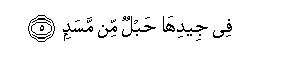

بسم الله الرحمن الرحيم
Sayyid Abul Ala Maududi - Tafhim al-Qur'an - The Meaning of the Qur'an
 111.
Surah Al Lahab (The Flame)
111.
Surah Al Lahab (The Flame)
The Surah takes its name from the word Lahab in the first verse.
Although the commentators have not disputed its being a Makki Surah, yet it is difficult to determine in which phase of the life at Makkah precisely it was revealed. However, in view of Abu Lahab's role and conduct against the Holy Prophet's message of Truth, it can be assumed that it must have been revealed in the period when he had transgressed all limits in his mad hostility to him, and his attitude was becoming a serious obstruction in the progress of Islam. It may well have been revealed in the period when the Quraish had boycotted the Holy Prophet (upon whom be peace) together with the people of his clan and besieged them in Shi'b Abi Talib, and Abu Lahab was the only person to join with the enemies against his own relatives. The basis of this assumption is that Abu Lahab was the Holy Prophet's uncle, and public condemnation of the uncle by the tongue of the nephew could not be proper until the extreme excesses committed by the uncle had become visible to everyone. If the Surah had been revealed before this, in the very beginning, the people would have regarded it as morally discourteous that the nephew should so condemn the uncle.
This is the only place in the Quran where a person from among the enemies of Islam has been condemned by name, whereas in Makkah as well as in Madinah, after the migration, there were many people who were in no way less inimical to Islam and the Prophet Muhammad (upon whom be Allah's peace and blessings) than Abu Lahab. The question is, what was the special trait of the character of this person, which became the basis of this condemnation by name? To understand that it is necessary that one should understand the Arabian society of that time and the role that Abu Lahab played in it.
In ancient days since there prevailed chaos and confusion, bloodshed and plunder throughout Arabia, and the condition for centuries was that a person could have no guarantee of the protection of life, honor and property except with the help and support of his clansmen and blood relations, therefore silah rehmi (good treatment of the kindred) was esteemed most highly among the moral values of the Arabian society and breaking off of connections with the kindred was regarded as a great sin. Under, the influence of the same Arabian tradition when the Holy Prophet (upon whom be peace) began to preach the message of Islam, the other clans of Quraish and their chiefs resisted and opposed him tooth and nail, but the Bani Hashim and the Bani al-Muttalib (children of al-Muttalib, brother of Hashim) not only did not oppose him but continued to support him openly, although most of them had not yet believed in his Prophethood. The other clans of Quraish themselves regarded this support by the blood relations of the Holy Prophet as perfectly in accordance with the moral traditions of Arabia. That is why they never taunted the Bani Hashim and the Bani al-Muttalib in that they had abandoned their ancestral faith by supporting a person who was preaching a new faith. They knew and believed that they could in no case hand over an individual of their clan to his enemies, and their support and aid of a clansman was perfectly natural in the sight of the Quraish and the people of Arabia.
This moral principle, which the Arabs even in the pre-Islamic days of ignorance, regarded as worthy of respect and inviolable was broken only by one man in his enmity of Islam, and that was Abu Lahab, son of Abdul Muttalib. He was an uncle of the Holy Prophet, whose father and he were sons of the same father. In Arabia, an uncle represented the father especially when the nephew was fatherless. The uncle was expected to look after the nephew as one of his own children. But this man in his hostility to Islam and love of kufr trampled all the Arab traditions under foot.
The traditionists have related from Ibn Abbas with several chains of transmitters the tradition that when the Holy Prophet was commanded to present the message of Islam openly, and he was instructed in the Quran to warn first of all his nearest kinsfolk of the punishment of God, he ascended the Mount, Safa one morning and called out aloud: Ya sabahah (O, the calamity of the morning!). This alarm in Arabia was raised by the person who noticed early at dawn an enemy tribe advancing against his tribe. When the Holy Messenger made this call, the people inquired as to who had made the call. They were told that it was Muhammad (upon whom be Allah's peace). There the people of all the clans of Quraish rushed out. Everyone who could, came. He who could not, sent another one for himself. When the People had assembled, the Holy Messenger calling out each clan by name, viz. O Bani Hashim, O Bani Abdul Muttalib, O Bani Fihr, O Bani so and so, said: "If I were to tell you that behind the hill there was an enemy host ready to fall upon you, would you believe me?" The people responded with one voice, saying that they never had so far experienced a lie from him. The Holy Prophet said: "Then I warn you that you are heading for a torment." Thereupon, before anyone else could speak, Abu Lahab, the Holy Prophet's uncle, said: "May you perish! Did you summon us for this?"Another tradition adds that he picked up a stone to throw at the Holy Prophet. (Musnad Ahmad, Bukhari, Muslim, Tirmidhi, Ibn Jarir, and others).
According to Ibn Zaid, one day Abu Lahab asked the Holy Prophet: "If I were to accept your religion, what would I get?" The Holy Prophet replied: "You would get what the other believers would get." He said: "Is there no preference or distinction for me?" The Holy Prophet replied: "What else do you want?" Thereupon he said: "May this religion perish in which I and all other people should be equal and alike!" (Ibn Jarir).
In Makkah Abu Lahab was the next door neighbor of the Holy Prophet. Their houses were separated by a wall. Besides him, Hakam bin As (Father of Marwan), Uqbah bin Abi Muait, Adi bin Hamra and Ibn al-Asda il-Hudhali also were his neighbors. These people did not allow him to have peace even in his own house. Sometimes when he was performing the Prayer, they would place the goat's stomach on him; sometimes when food was being cooked in the courtyard, they would throw filth at the cooking pot. The Holy Prophet would come out and say: "O Bani Abdi Manaf, what kind of neighborliness is it?"Abu Lahab's wife, Umm Jamil (Abu Sufyan's sister), had made it a practice to cast thorns at his door in the night so that when he or his children came out of the house at dawn, they should run thorns in the foot. (Baihaqi, Ibn Abi Hatim, Ibn Jarir, Ibn Asakir, Ibn Hisham).
Before the proclamation of Prophethood, two of the Holy Prophet's daughters were married to two of Abu Lahab's sons, Utbah and Utaibah. After his call when the Holy Prophet began to invite the people to Islam, Abu Lahab said to both his sons:"I would forbid myself seeing and meeting you until you divorced the daughters of Muhammad (upon whom be Allah's peace and blessings)."So, both of them divorced their, wives. Utaibah in particular became so nasty in his spitefulness that one day he came before the Holy Prophet and said: "I repudiate An-najmi idha hawa and Alladhi dana fatadalla" and then he spat at him, but his spital did not fall on him. The Holy Prophet prayed: "O God, subject him to the power of a dog from among Your dogs."Afterwards, Utaibah accompanied his father in his journey to Syria. During the journey the caravan halted at a place which, according to local people, was visited by wild beasts at night. Abu Lahab told his companions, the Quraish: "Make full arrangements for the protection of my son, for I fear the curse invoked by Muhammad (upon whom be Allah's peace) on him." Accordingly, the people made their camels sit all around Utaibah and went to sleep. At night a tiger came which crossed the circle of the camels and devoured Utaibah tearing him to pieces. (Ibn Abdul Barr: Al-Istiab; Ibn Hajar: Al- Isabah; Abu Nuaim al-Isfahani: Dalail an-Nubuwwat; As-Suhaili: Raud al-Unuf. Here there is a difference of opinion. Some reporters say that the divorce took place after the Holy Prophet's proclamation of Prophethood and some say that it took place after the revelation of Tabbat yada Abi Lahab. There is also a difference of opinion about whether Abu Lahab's this son was Utbah or Utaibah. But this much is confirmed that after the conquest of Makkah, Utbah embraced Islam and took the oath of allegiance at the Holy Prophet's hand. Therefore, the correct view is that it was Utaibah).
Abu Lahab's wickedness can be judged from the fact that when after the death of the Holy Prophet's son Hadrat Qasim, his second son, Hadrat Abdullah, also died, this man instead of joining with his nephew in his bereavement, hastened to the Quraish chiefs joyfully to give them the news that Muhammad (upon whom be Allah's peace and blessings) had become childless that night. This we have already related in the commentary of Surah Al-Kauthar.
Wherever the Holy Prophet went to preach his message of Islam, this man followed him and forbade the people to listen to him. Rabiah bin Abbad ad- Dill has related: "I was a young boy when I accompanied my father to the face of Dhul-Majaz. There I saw the Holy Messenger (may peace be upon him) who was exhorting the people, saying: 'O people, say: there is no deity but Allah, you will attain success.' Following behind him I saw a man, who was telling the people, `This fellow is a liar: he has gone astray from his ancestral faith.' I asked; who is he? The people replied: He is his uncle, Abu Lahab." (Musnad Ahmad, Baihaqi).
Another tradition from Hadrat Rabiah is to the effect; "I saw that the Holy Prophet went to the halting place of each tribe and said: `O children of so and so, I have been appointed Allah's Messenger to you. I exhort you to worship only Allah and to associate none with Him. So, affirm faith in me and join me so that I may fulfill the mission for which I have been sent.' Following close behind him there was a man who was saying: `O children of so and so, he is leading you astray from Lat and Uzza and inviting you to the religion of error and innovation which he has brought. Do not at all listen to what he says and do not follow him.' I asked my father: who is he? He replied: he is his uncle, Abu Lahab." (Musnad Ahmad, Tabarani).
Tariq bin Abdullah al-Muharibi's tradition is similar. He says: "I saw in the fare of Dhul-Majaz that the Holy Messenger (upon whom be peace) was exhorting the people, saying: `O people, say La ilaha ill-Allah, you will attain success', and behind him there was a man who was casting stones at him, until his heels bled, and he was telling the people: 'Do not listen to him, he is a liar.' I asked the people who he was. They said he was his uncle, Abu Lahab." (Tirmidhi).
In the 7th year of Prophethood, when all the clans of Quraish boycotted the Bani Hashim and the Bani al-Muttalib socially and economically, and both these clans remaining steadfast to the Holy Prophet's support, were besieged in Shib Abi Talib, Abu Lahab was the only person, who sided with the disbelieving Quraish against his own clan. This boycott continued for three years, so much so that the Bani Hashim and the Bani al-Muttalib began to starve. This, however, did not move Abu Lahab. When a trade caravan came to Makkah and a besieged person from Shib Abi Talib approached it to buy some article of food, Abu Lahab would shout out to the merchants to demand a forbidding price, telling them that he would make up for any loss that they incurred. Thus, they would demand exorbitant rates and the poor customer had to return empty handed to his starving children. Then Abu Lahab would purchase the same articles from them at the market rates. (Ibn Sa'd, Ibn Hisham).
On account of these very misdeeds this man was condemned in this Surah by name, and there was a special need for it. When the Holy Prophet's own uncle followed and opposed him before the Arabs who came for hajj from outside Makkah, or gathered together in the fares held at different places, they regarded it as against the established traditions of Arabia that an uncle should run down his nephew without a reason, should pelt stones at him and bring false accusations against him publicly. They were, therefore, influenced by what Abu Lahab said and were involved in doubt about the Holy Prophet (upon whom be peace). But when this, Surah was revealed, and Abu Lahab, filled with rage, started uttering nonsense, the people realized that what he said in opposition to the Holy Prophet was not at all reliable, for he said all that in his mad hostility to his nephew.
Besides, when his uncle was condemned by name, the people's expectation that the Holy Messenger (upon whom be peace) could treat some relative leniently in the matter of religion was frustrated for ever. When the Holy Messenger's own uncle was taken to task publicly the people understood that there was no room for preference or partiality in their faith. A non-relative could become a near and dear one if he believed, and a near relation a non-relative if he disbelieved. Thus, there is no place for the ties of blood in religion.

In the name of Allah, the Compassionate, the Merciful.

[1-5] Broken were the hands of Abu Lahab and he was doomed to utter failure.1 His wealth and whatever he earned did not avail him anything.2 Certainly he shall be cast into a blazing Fire. And his wife, too,3 the bearer of slander.4 Round her neck will be a rope of palm-fibre.5
1His real name was 'Abd al-'Uzza, and he was called Abu Lahab on account of his glowing, ruddy complexion. Lahab means the flame of fire, and Abu Lahab the one with a flaming, fiery face. His being mentioned here by his nickname (Kunyat), instead of his real name, has several reasons. First, that he was better known by his nickname than by his real name; second, that the Qur'an did not approve that he should be mentioned by his polytheistic name `Abd al 'Uzza (slave of 'Uzza); third, that his kunyat goes well with the fate that has been described of him in this Surah.
Some commentators have translated tabbat yada Abi Lahab to mean: "May the hands of Abu Lahab be broken", and tabby to mean: “may he perish" or "he perished". But this, in fact, was not a curse which was invoked on him, but a prophecy in which an event taking place in the future, has been described in the past tense, to suggest that its occurrence in the future is certain and inevitable.
In actual fact, at last the same thing happened as had been foretold in this Surah a few years earlier. Breaking of the hands obviously does not imply breaking of the physical hands, but a person's utterly failing in his aim and object for which he has exerted his utmost. And Abu Lahab indeed had exerted his utmost to defeat and frustrate the message of Islam presented by the Holy Prophet (upon whom be peace). But hardly seven or eight years after the revelation of this Surah most of the big chiefs of Quraish, who were a party with Abu Lahab in his hostility to Islam, were killed in the Battle of Badr. When the news of the defeat reached Makkah, he was so shocked that he could not survive for more than seven days. His death occurred in a pitiable state. He became afflicted with malignant pustule and the people of his house left him to himself, fearing contagion. No one came near his body for three days after his death, until the body decomposed and began to stink. At last, when the people began to taunt his sons, according to one tradition, they hired some Africans, who lifted his body and buried it.
According to another tradition, they got a pit dug out and threw his body into it by pushing it with wood, and covered it up with earth and stones. His utter failure became manifest when the religion which he had tried his utmost to impede and thwart, was accepted by his own children. First of all, his daughter, Darrah, migrated from Makkah to Madinah and embraced Islam; then on the conquest of Makkah, both his sons, `Utabh and Mu`attab, came before the Holy Prophet (upon whom be peace) through the mediation of Hadrat `Abbas, believed and took oath of allegiance to him.
2Abu Lahab was a stingy, materialistic man. Ibn Jarir has stated that once in the pre-Islamic days he was accused of having stolen two golden deer from the treasury of the Ka'bah. Though later the deer were recovered from another person, the fact that he was accused of stealing indicates the opinion the people of Makkah held of him. About his riches Qadi Rashid bin Zubair writes in his Adh-Dhakha'ir wat-Tuhaf. He was one of the four richest men of the Quraish, who owned one qintar (about 260 oz) of gold each. His love of wealth can be judged from the fact that when on the occasion of the battle of Badr the fate of his religion was going to be decided for ever, and all the Quraish chiefs had personally gone to fight, he sent `As bin Hisham to fight on his own behalf, telling him: This is in lieu of the debt of four thousand dirhams that you owe to me. Thus. he contrived a plan to realize his debt, for 'As had become bankrupt and there was no hope of the recovery of the debt from him.
Some commentators have taken ma kasaba in the meaning of the earning, i.r. the benefits that accrued to him from his wealth were his kasab(earning), and some other commentators have taken it to imply children, for the Holy Prophet (upon whom be peace) has said that a man's son also is his kasab (earning). (Abu Da'ud, Ibn Abi Hatim). Both these meanings fully correspond to the fate met by Abu Lahab. For when he was afflicted with the malignant pustule, his wealth availed him nothing, and his children also left him alone to die a miserable, wretched death. They did not even bury him honorably. Thus, within a few years the people witnessed how the prophecy which had been made in this Surah about Abu Lahab was literally fulfilled.
3Her name was Arwa' and her nickname (kunyat) Umm Jamil. She was sister of Abu Sufyan and was no less bitter than her husband, Abu Lahab, in her enmity to the Holy Messenger (upon whom be peace) Hadrat Abu Bakr's daughter, Hadrat Asma', has related that when this Surah was revealed, and Umm Jamil heard it, she was filled with rage and went out in search of the Holy Prophet (upon whom be peace). She carried a handful of stones and she was crying some verses of her own, satirizing the Holy Prophet. She came to the Ka`bah, where the Holy Prophet was sitting with Hadrat Abu Bakr. The latter said: "O Messenger of Allah, there she comes and I fear lest she should utter something derogatory to you." The Holy Prophet replied: "She will not see me." The same thing happened. She could not see the Holy Prophet although he was there. She said to Hadrat Abu Bakr: "I hear that your Companion has satirized me." Hadrat Abu Bakr replied: "No, by the Lord of this house, he has not satirized you." Hearing this she went off. (lbn Abi Hatim, Ibn Hisham; Bazzar has related an incident on the authority of Hadrat 'Abdullah bin `Abbas also, which closely resembles this). What Hadrat Abu Bakr meant was that she had not been satirized by the Holy Prophet (upon whom be peace), but by Allah Himself.
4The words in the original are hammalat al-hatab, which literally mean: "carrier of the wood". The commentators have given several meanings of it. Hadrat `Abdullah bin `Abbas, Ibn Zaid, Dahhak and Rabi` bin Anas say: She used to strew thorns at the Holy Prophet's door in the night; therefore, she has been described as carrier of the wood. Qatadah, Ikrimah Hasan Bari, Mujahid and Sufyan Thauri say: She used to carry evil tales and slander from one person to another in order to create hatred between them; therefore, she has been called the bearer of wood idiomatically. Sa`id bin Jubair says: The one who is loading himself with the burden of sin, is described idiomatically in Arabic as: Fulan-un Yahtatibu ala zahri bi (so and so is loading wood on his back); therefore, hummalat al-hatab means: “The one who carries the burden of sin.” Another meaning also which the commentators have given is: she will do this in the Hereafter, i.e. she will bring and supply wood to the fire in which Abu Lahab would be burning.
5The word used for her neck is jid, which in Arabic means a neck decorated with an ornament. Sa`id bin al-Musayyab, Hasan Basri and Qatadah say that she wore a valuable necklace and used to say: "By Lat and `Uzza, I will sell away this necklace and expend the price to satisfy my enmity against Muhammad (Allah's peace and blessings be upon him)." That is why the word jid has been used here ironically, thereby implying that in Hell she would have a rope of palm-fibre round her neck instead of that necklace upon which she prides herself so arrogantly. Another example of this ironical style is found at several places in the Qur'an in the sentence: Bashshir-hum bi-`adhab-in alima "Give them the good news of a painful torment."
The words babl-um min-masad have been used for the rope which will be put round her neck, i e. it will be a rope of the masad kind. Different meanings of this have been given by the lexicographers and commentators. According to some, masad means a tightly twisted rope; others say that: masad is the rope made from palm-fibre; still others say that it means the rope made from rush, or camel-skin, or camel-hair. Still another view is that it implies a cable made by twisted iron strands together.